Test Preference (Savings Distribution)
back to Fan's Dynamic Assets Repository Table of Content.
Testing the ff_az_ds_vec program for solving the savings only dynamic programming problem.
defaults in ffs_az_set_default_param.m are:
- param_map('fl_beta') = 0.94;
- param_map('fl_crra') = 1.5;
here test three levels of discount:
- 0.87
- 0.925
- 0.97
for each shock, thest at these crra levels
- log (1)
- 1.5
- 2.0
Contents
Set Shared Parameters
close all; clear all; ar_fl_beta = [0.87, 0.925, 0.97]; ar_fl_crra = [1, 1.5, 2.0]; it_a_n = 750; it_z_n = 15;
Simulate Model with Discount = 0.85
for fl_crra = ar_fl_crra disp('xxxxxxxxxxxxxxxxxxxxxxxxxxx'); disp('xxxxxxxxxxxxxxxxxxxxxxxxxxx'); disp(['fl_beta = ' num2str(ar_fl_beta(1))]); disp(['fl_crra = ' num2str(fl_crra)]); disp('xxxxxxxxxxxxxxxxxxxxxxxxxxx'); disp('xxxxxxxxxxxxxxxxxxxxxxxxxxx'); disp(''); disp(''); disp(''); disp(''); % Call Default Parameters <https://fanwangecon.github.io/CodeDynaAsset/m_az/paramfunc/html/ffs_az_set_default_param.html ffs_az_set_default_param> bl_input_override = true; it_param_set = 9; [param_map, support_map] = ffs_az_set_default_param(it_param_set); % Simulation Accuracy param_map('it_a_n') = it_a_n; param_map('it_z_n') = it_z_n; param_map('fl_beta') = ar_fl_beta(1); param_map('fl_crra') = fl_crra; % Display Parameters support_map('bl_display') = false; support_map('bl_display_final') = false; support_map('bl_time') = true; support_map('bl_profile') = false; % Call Grid Generator <https://fanwangecon.github.io/CodeDynaAsset/m_az/paramfunc/html/ffs_az_get_funcgrid.html ffs_az_get_funcgrid> [armt_map, func_map] = ffs_az_get_funcgrid(param_map, support_map, bl_input_override); % Call Dynamic Programming Problem <https://fanwangecon.github.io/CodeDynaAsset/m_az/solve/html/ff_az_vf_vecsv.html ff_az_vf_vecsv> result_map = ff_az_vf_vecsv(param_map, support_map, armt_map, func_map); % Call Distribution CProgram result_map = ff_az_ds_vec(param_map, support_map, armt_map, func_map, result_map, bl_input_override); % Snap snapnow; end % close all close all;
xxxxxxxxxxxxxxxxxxxxxxxxxxx
xxxxxxxxxxxxxxxxxxxxxxxxxxx
fl_beta = 0.87
fl_crra = 1
xxxxxxxxxxxxxxxxxxxxxxxxxxx
xxxxxxxxxxxxxxxxxxxxxxxxxxx
Warning:
"C:\Users\fan\CodeDynaAsset\m_az\test\ff_az_ds_vec\test_pref\html"
not found in path.
Warning:
"C:\Users\fan\CodeDynaAsset\m_az\test\ff_az_ds_vec\test_shock\html"
not found in path.
Elapsed time is 0.748413 seconds.
Elapsed time is 0.323708 seconds.
"tb_prob_drv, Percentiles of Y, …" "cl_mt_pol_a"
percentiles cl_mt_pol_aPercentileValues fracOfSumHeldBelowThisPercentile
___________ ___________________________ ________________________________
0.1 0 0
1 0 0
5 0 0
10 0 0
15 0 0
20 0 0
25 0 0
35 0 0
50 0 0
65 0 0
75 0 0
80 0 0
85 0 0
90 0 0
95 0.066756 0.182
99 0.33378 0.62469
99.9 0.86782 0.95057
"tb_prob_drv, Percentiles of Y, …" "cl_mt_pol_coh"
percentiles cl_mt_pol_cohPercentileValues fracOfSumHeldBelowThisPercentile
___________ _____________________________ ________________________________
0.1 0.44468 0.00092996
1 0.59175 0.012136
5 0.68262 0.033709
10 0.78744 0.079791
15 0.90837 0.16227
20 0.90837 0.16227
25 0.90837 0.16227
35 1.0479 0.2858
50 1.2088 0.44003
65 1.3944 0.59952
75 1.6085 0.73585
80 1.6085 0.73585
85 1.7454 0.75243
90 1.8555 0.83382
95 2.1405 0.90033
99 2.9168 0.97638
99.9 3.7648 0.99727
"tb_prob_drv, Percentiles of Y, …" "cl_mt_pol_c"
percentiles cl_mt_pol_cPercentileValues fracOfSumHeldBelowThisPercentile
___________ ___________________________ ________________________________
0.1 0.44468 0.00094082
1 0.59175 0.012278
5 0.68262 0.034103
10 0.78744 0.080724
15 0.90837 0.16416
20 0.90837 0.16416
25 0.90837 0.16416
35 1.0479 0.28914
50 1.2088 0.44518
65 1.3944 0.60669
75 1.6085 0.7452
80 1.6085 0.7452
85 1.6786 0.76129
90 1.8555 0.8457
95 2.0737 0.91168
99 2.6227 0.97854
99.9 2.962 0.9977
tb_outcomes_meansdperc: mean, sd, percentiles
mean sd coefofvar min max pYis0 pYisMINY pYisMAXY p0_1 p1 p5 p10 p15 p20 p25 p35 p50 p65 p75 p80 p85 p90 p95 p99 p99_9
________ ________ _________ _______ ______ _______ _________ ________ _______ _______ _______ _______ _______ _______ _______ ______ ______ ______ ______ ______ ______ ______ ________ _______ _______
cl_mt_pol_a 0.014959 0.070108 4.6866 0 43.725 0.91331 0.91331 0 0 0 0 0 0 0 0 0 0 0 0 0 0 0 0.066756 0.33378 0.86782
cl_mt_pol_coh 1.2953 0.47883 0.36966 0.44468 54.536 0 0.0027089 0 0.44468 0.59175 0.68262 0.78744 0.90837 0.90837 0.90837 1.0479 1.2088 1.3944 1.6085 1.6085 1.7454 1.8555 2.1405 2.9168 3.7648
cl_mt_pol_c 1.2804 0.43668 0.34106 0.44468 10.811 0 0.0027089 0 0.44468 0.59175 0.68262 0.78744 0.90837 0.90837 0.90837 1.0479 1.2088 1.3944 1.6085 1.6085 1.6786 1.8555 2.0737 2.6227 2.962
tb_outcomes_fracheld: fraction of asset/income/etc held by hh up to this percentile
fracByP0_1 fracByP1 fracByP5 fracByP10 fracByP15 fracByP20 fracByP25 fracByP35 fracByP50 fracByP65 fracByP75 fracByP80 fracByP85 fracByP90 fracByP95 fracByP99 fracByP99_9
__________ ________ ________ _________ _________ _________ _________ _________ _________ _________ _________ _________ _________ _________ _________ _________ ___________
cl_mt_pol_a 0 0 0 0 0 0 0 0 0 0 0 0 0 0 0.182 0.62469 0.95057
cl_mt_pol_coh 0.00092996 0.012136 0.033709 0.079791 0.16227 0.16227 0.16227 0.2858 0.44003 0.59952 0.73585 0.73585 0.75243 0.83382 0.90033 0.97638 0.99727
cl_mt_pol_c 0.00094082 0.012278 0.034103 0.080724 0.16416 0.16416 0.16416 0.28914 0.44518 0.60669 0.7452 0.7452 0.76129 0.8457 0.91168 0.97854 0.9977
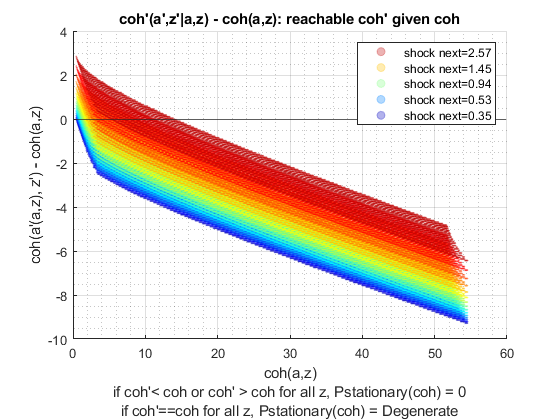 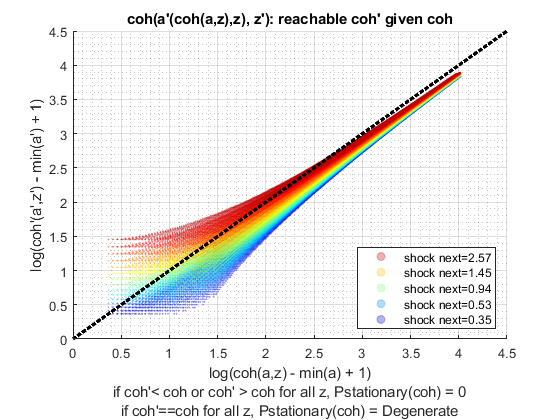 xxxxxxxxxxxxxxxxxxxxxxxxxxx
xxxxxxxxxxxxxxxxxxxxxxxxxxx
fl_beta = 0.87
fl_crra = 1.5
xxxxxxxxxxxxxxxxxxxxxxxxxxx
xxxxxxxxxxxxxxxxxxxxxxxxxxx
Elapsed time is 0.947764 seconds.
Elapsed time is 0.361748 seconds.
"tb_prob_drv, Percentiles of Y, …" "cl_mt_pol_a"
percentiles cl_mt_pol_aPercentileValues fracOfSumHeldBelowThisPercentile
___________ ___________________________ ________________________________
0.1 0 0
1 0 0
5 0 0
10 0 0
15 0 0
20 0 0
25 0 0
35 0 0
50 0 0
65 0 0
75 0.066756 0.052529
80 0.066756 0.052529
85 0.13351 0.12122
90 0.26702 0.27052
95 0.46729 0.44365
99 1.2016 0.81084
99.9 2.2029 0.97398
"tb_prob_drv, Percentiles of Y, …" "cl_mt_pol_coh"
percentiles cl_mt_pol_cohPercentileValues fracOfSumHeldBelowThisPercentile
___________ _____________________________ ________________________________
0.1 0.44468 0.00088037
1 0.59175 0.011457
5 0.68262 0.031708
10 0.78744 0.074567
15 0.90837 0.14995
20 0.90837 0.14995
25 0.90837 0.14995
35 1.0479 0.26029
50 1.2088 0.39275
65 1.3944 0.52443
75 1.6085 0.64212
80 1.677 0.66565
85 1.8555 0.73526
90 2.1292 0.80257
95 2.5376 0.88597
99 3.564 0.97007
99.9 4.8641 0.9962
"tb_prob_drv, Percentiles of Y, …" "cl_mt_pol_c"
percentiles cl_mt_pol_cPercentileValues fracOfSumHeldBelowThisPercentile
___________ ___________________________ ________________________________
0.1 0.44468 0.00093788
1 0.59175 0.012205
5 0.68262 0.033781
10 0.78744 0.079444
15 0.90837 0.15978
20 0.90837 0.15978
25 0.90837 0.15978
35 1.0479 0.27785
50 1.2088 0.42009
65 1.3944 0.56514
75 1.6085 0.69887
80 1.6102 0.71782
85 1.7888 0.80519
90 1.8606 0.84628
95 2.0124 0.91205
99 2.3992 0.97989
99.9 2.7801 0.99787
tb_outcomes_meansdperc: mean, sd, percentiles
mean sd coefofvar min max pYis0 pYisMINY pYisMAXY p0_1 p1 p5 p10 p15 p20 p25 p35 p50 p65 p75 p80 p85 p90 p95 p99 p99_9
_______ _______ _________ _______ ______ _______ _________ ________ _______ _______ _______ _______ _______ _______ _______ ______ ______ ______ ________ ________ _______ _______ _______ ______ ______
cl_mt_pol_a 0.08375 0.23522 2.8086 0 45.995 0.74805 0.74805 0 0 0 0 0 0 0 0 0 0 0 0.066756 0.066756 0.13351 0.26702 0.46729 1.2016 2.2029
cl_mt_pol_coh 1.3659 0.60014 0.43939 0.44468 54.536 0 0.0027041 0 0.44468 0.59175 0.68262 0.78744 0.90837 0.90837 0.90837 1.0479 1.2088 1.3944 1.6085 1.677 1.8555 2.1292 2.5376 3.564 4.8641
cl_mt_pol_c 1.2821 0.41818 0.32617 0.44468 8.5411 0 0.0027041 0 0.44468 0.59175 0.68262 0.78744 0.90837 0.90837 0.90837 1.0479 1.2088 1.3944 1.6085 1.6102 1.7888 1.8606 2.0124 2.3992 2.7801
tb_outcomes_fracheld: fraction of asset/income/etc held by hh up to this percentile
fracByP0_1 fracByP1 fracByP5 fracByP10 fracByP15 fracByP20 fracByP25 fracByP35 fracByP50 fracByP65 fracByP75 fracByP80 fracByP85 fracByP90 fracByP95 fracByP99 fracByP99_9
__________ ________ ________ _________ _________ _________ _________ _________ _________ _________ _________ _________ _________ _________ _________ _________ ___________
cl_mt_pol_a 0 0 0 0 0 0 0 0 0 0 0.052529 0.052529 0.12122 0.27052 0.44365 0.81084 0.97398
cl_mt_pol_coh 0.00088037 0.011457 0.031708 0.074567 0.14995 0.14995 0.14995 0.26029 0.39275 0.52443 0.64212 0.66565 0.73526 0.80257 0.88597 0.97007 0.9962
cl_mt_pol_c 0.00093788 0.012205 0.033781 0.079444 0.15978 0.15978 0.15978 0.27785 0.42009 0.56514 0.69887 0.71782 0.80519 0.84628 0.91205 0.97989 0.99787
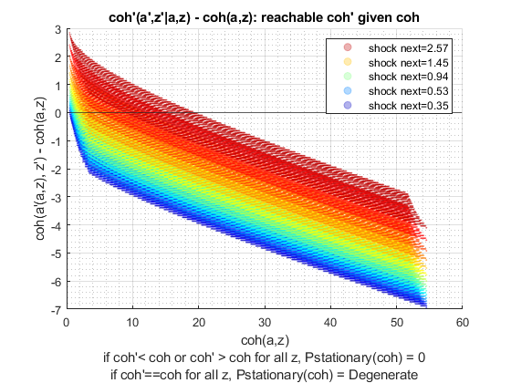 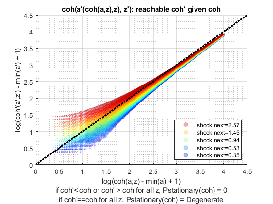 xxxxxxxxxxxxxxxxxxxxxxxxxxx
xxxxxxxxxxxxxxxxxxxxxxxxxxx
fl_beta = 0.87
fl_crra = 2
xxxxxxxxxxxxxxxxxxxxxxxxxxx
xxxxxxxxxxxxxxxxxxxxxxxxxxx
Elapsed time is 0.799293 seconds.
Elapsed time is 0.510437 seconds.
"tb_prob_drv, Percentiles of Y, …" "cl_mt_pol_a"
percentiles cl_mt_pol_aPercentileValues fracOfSumHeldBelowThisPercentile
___________ ___________________________ ________________________________
0.1 0 0
1 0 0
5 0 0
10 0 0
15 0 0
20 0 0
25 0 0
35 0 0
50 0 0
65 0.13351 0.069072
75 0.20027 0.11446
80 0.33378 0.19784
85 0.46729 0.28724
90 0.66756 0.40249
95 1.1348 0.62408
99 2.1362 0.87215
99.9 3.5381 0.98303
"tb_prob_drv, Percentiles of Y, …" "cl_mt_pol_coh"
percentiles cl_mt_pol_cohPercentileValues fracOfSumHeldBelowThisPercentile
___________ _____________________________ ________________________________
0.1 0.44468 0.00078988
1 0.59175 0.010152
5 0.68262 0.027726
10 0.78744 0.06393
15 0.90837 0.12528
20 0.90837 0.12528
25 1.0479 0.21267
35 1.0479 0.21267
50 1.2772 0.33271
65 1.5313 0.46452
75 1.7562 0.574
80 1.9418 0.6372
85 2.1559 0.70752
90 2.4826 0.78382
95 3.03 0.871
99 4.3985 0.9659
99.9 6.0957 0.99565
"tb_prob_drv, Percentiles of Y, …" "cl_mt_pol_c"
percentiles cl_mt_pol_cPercentileValues fracOfSumHeldBelowThisPercentile
___________ ___________________________ ________________________________
0.1 0.44468 0.00092198
1 0.59175 0.011852
5 0.68262 0.032376
10 0.78744 0.074679
15 0.90837 0.14661
20 0.90837 0.14661
25 1.0452 0.15791
35 1.0479 0.25158
50 1.2088 0.37898
65 1.3961 0.53491
75 1.5429 0.64796
80 1.6152 0.70971
85 1.7237 0.78204
90 1.8021 0.84222
95 1.9586 0.91668
99 2.319 0.98111
99.9 2.6049 0.99789
tb_outcomes_meansdperc: mean, sd, percentiles
mean sd coefofvar min max pYis0 pYisMINY pYisMAXY p0_1 p1 p5 p10 p15 p20 p25 p35 p50 p65 p75 p80 p85 p90 p95 p99 p99_9
_______ _______ _________ _______ ______ _______ _________ ________ _______ _______ _______ _______ _______ _______ ______ ______ ______ _______ _______ _______ _______ _______ ______ ______ ______
cl_mt_pol_a 0.21498 0.44091 2.051 0 47.263 0.55583 0.55583 0 0 0 0 0 0 0 0 0 0 0.13351 0.20027 0.33378 0.46729 0.66756 1.1348 2.1362 3.5381
cl_mt_pol_coh 1.5004 0.77896 0.51918 0.44468 54.536 0 0.0026651 0 0.44468 0.59175 0.68262 0.78744 0.90837 0.90837 1.0479 1.0479 1.2772 1.5313 1.7562 1.9418 2.1559 2.4826 3.03 4.3985 6.0957
cl_mt_pol_c 1.2854 0.39702 0.30887 0.44468 7.2728 0 0.0026651 0 0.44468 0.59175 0.68262 0.78744 0.90837 0.90837 1.0452 1.0479 1.2088 1.3961 1.5429 1.6152 1.7237 1.8021 1.9586 2.319 2.6049
tb_outcomes_fracheld: fraction of asset/income/etc held by hh up to this percentile
fracByP0_1 fracByP1 fracByP5 fracByP10 fracByP15 fracByP20 fracByP25 fracByP35 fracByP50 fracByP65 fracByP75 fracByP80 fracByP85 fracByP90 fracByP95 fracByP99 fracByP99_9
__________ ________ ________ _________ _________ _________ _________ _________ _________ _________ _________ _________ _________ _________ _________ _________ ___________
cl_mt_pol_a 0 0 0 0 0 0 0 0 0 0.069072 0.11446 0.19784 0.28724 0.40249 0.62408 0.87215 0.98303
cl_mt_pol_coh 0.00078988 0.010152 0.027726 0.06393 0.12528 0.12528 0.21267 0.21267 0.33271 0.46452 0.574 0.6372 0.70752 0.78382 0.871 0.9659 0.99565
cl_mt_pol_c 0.00092198 0.011852 0.032376 0.074679 0.14661 0.14661 0.15791 0.25158 0.37898 0.53491 0.64796 0.70971 0.78204 0.84222 0.91668 0.98111 0.99789
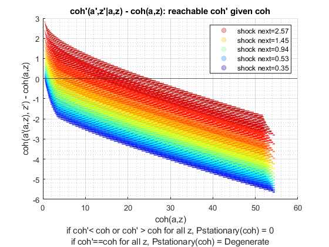 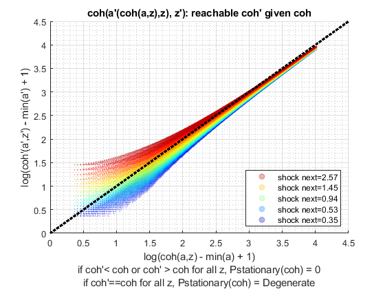 Simulate Model with Discount = 0.925
close all for fl_crra = ar_fl_crra disp('xxxxxxxxxxxxxxxxxxxxxxxxxxx'); disp('xxxxxxxxxxxxxxxxxxxxxxxxxxx'); disp(['fl_beta = ' num2str(ar_fl_beta(2))]); disp(['fl_crra = ' num2str(fl_crra)]); disp('xxxxxxxxxxxxxxxxxxxxxxxxxxx'); disp('xxxxxxxxxxxxxxxxxxxxxxxxxxx'); disp(''); disp(''); disp(''); disp(''); % Call Default Parameters <https://fanwangecon.github.io/CodeDynaAsset/m_az/paramfunc/html/ffs_az_set_default_param.html ffs_az_set_default_param> bl_input_override = true; it_param_set = 9; [param_map, support_map] = ffs_az_set_default_param(it_param_set); % Simulation Accuracy param_map('it_a_n') = it_a_n; param_map('it_z_n') = it_z_n; param_map('fl_beta') = ar_fl_beta(2); param_map('fl_crra') = fl_crra; % Display Parameters support_map('bl_display') = false; support_map('bl_display_final') = false; support_map('bl_time') = true; support_map('bl_profile') = false; % Call Grid Generator <https://fanwangecon.github.io/CodeDynaAsset/m_az/paramfunc/html/ffs_az_get_funcgrid.html ffs_az_get_funcgrid> [armt_map, func_map] = ffs_az_get_funcgrid(param_map, support_map, bl_input_override); % Call Dynamic Programming Problem <https://fanwangecon.github.io/CodeDynaAsset/m_az/solve/html/ff_az_vf_vecsv.html ff_az_vf_vecsv> result_map = ff_az_vf_vecsv(param_map, support_map, armt_map, func_map); % Call Distribution CProgram result_map = ff_az_ds_vec(param_map, support_map, armt_map, func_map, result_map, bl_input_override); % Snap snapnow; end % close all close all;
xxxxxxxxxxxxxxxxxxxxxxxxxxx
xxxxxxxxxxxxxxxxxxxxxxxxxxx
fl_beta = 0.925
fl_crra = 1
xxxxxxxxxxxxxxxxxxxxxxxxxxx
xxxxxxxxxxxxxxxxxxxxxxxxxxx
Warning: Name is nonexistent or not a
directory:
C:\Users\fan\CodeDynaAsset\m_az\test\ff_az_ds\test_pref
Elapsed time is 0.866144 seconds.
Elapsed time is 0.420528 seconds.
"tb_prob_drv, Percentiles of Y, …" "cl_mt_pol_a"
percentiles cl_mt_pol_aPercentileValues fracOfSumHeldBelowThisPercentile
___________ ___________________________ ________________________________
0.1 0 0
1 0 0
5 0 0
10 0 0
15 0 0
20 0 0
25 0 0
35 0 0
50 0 0
65 0.066756 0.035959
75 0.20027 0.11352
80 0.26702 0.17131
85 0.40053 0.25779
90 0.6008 0.38133
95 1.0013 0.5718
99 2.0694 0.85837
99.9 3.5381 0.98071
"tb_prob_drv, Percentiles of Y, …" "cl_mt_pol_coh"
percentiles cl_mt_pol_cohPercentileValues fracOfSumHeldBelowThisPercentile
___________ _____________________________ ________________________________
0.1 0.44468 0.00080867
1 0.59175 0.010438
5 0.68262 0.028634
10 0.78744 0.066422
15 0.90837 0.13103
20 0.90837 0.13103
25 0.97679 0.13605
35 1.0479 0.22272
50 1.2088 0.32847
65 1.4825 0.46986
75 1.7365 0.57985
80 1.8822 0.64291
85 2.0875 0.70601
90 2.4142 0.78584
95 2.9616 0.87387
99 4.3188 0.96569
99.9 6.0407 0.9955
"tb_prob_drv, Percentiles of Y, …" "cl_mt_pol_c"
percentiles cl_mt_pol_cPercentileValues fracOfSumHeldBelowThisPercentile
___________ ___________________________ ________________________________
0.1 0.44468 0.00092706
1 0.59175 0.011968
5 0.68262 0.032835
10 0.78744 0.076186
15 0.90837 0.1504
20 0.90837 0.1504
25 0.97679 0.15663
35 1.0479 0.25749
50 1.2088 0.38502
65 1.3961 0.54558
75 1.5418 0.6499
80 1.6147 0.70867
85 1.7237 0.78354
90 1.8005 0.84133
95 1.9573 0.91576
99 2.319 0.98099
99.9 2.6015 0.99793
tb_outcomes_meansdperc: mean, sd, percentiles
mean sd coefofvar min max pYis0 pYisMINY pYisMAXY p0_1 p1 p5 p10 p15 p20 p25 p35 p50 p65 p75 p80 p85 p90 p95 p99 p99_9
_______ _______ _________ _______ ______ _______ _________ ________ _______ _______ _______ _______ _______ _______ _______ ______ ______ ________ _______ _______ _______ ______ ______ ______ ______
cl_mt_pol_a 0.18809 0.41755 2.22 0 47.53 0.58394 0.58394 0 0 0 0 0 0 0 0 0 0 0.066756 0.20027 0.26702 0.40053 0.6008 1.0013 2.0694 3.5381
cl_mt_pol_coh 1.4728 0.75581 0.51317 0.44468 54.536 0 0.0026783 0 0.44468 0.59175 0.68262 0.78744 0.90837 0.90837 0.97679 1.0479 1.2088 1.4825 1.7365 1.8822 2.0875 2.4142 2.9616 4.3188 6.0407
cl_mt_pol_c 1.2847 0.40034 0.31162 0.44468 7.0058 0 0.0026783 0 0.44468 0.59175 0.68262 0.78744 0.90837 0.90837 0.97679 1.0479 1.2088 1.3961 1.5418 1.6147 1.7237 1.8005 1.9573 2.319 2.6015
tb_outcomes_fracheld: fraction of asset/income/etc held by hh up to this percentile
fracByP0_1 fracByP1 fracByP5 fracByP10 fracByP15 fracByP20 fracByP25 fracByP35 fracByP50 fracByP65 fracByP75 fracByP80 fracByP85 fracByP90 fracByP95 fracByP99 fracByP99_9
__________ ________ ________ _________ _________ _________ _________ _________ _________ _________ _________ _________ _________ _________ _________ _________ ___________
cl_mt_pol_a 0 0 0 0 0 0 0 0 0 0.035959 0.11352 0.17131 0.25779 0.38133 0.5718 0.85837 0.98071
cl_mt_pol_coh 0.00080867 0.010438 0.028634 0.066422 0.13103 0.13103 0.13605 0.22272 0.32847 0.46986 0.57985 0.64291 0.70601 0.78584 0.87387 0.96569 0.9955
cl_mt_pol_c 0.00092706 0.011968 0.032835 0.076186 0.1504 0.1504 0.15663 0.25749 0.38502 0.54558 0.6499 0.70867 0.78354 0.84133 0.91576 0.98099 0.99793
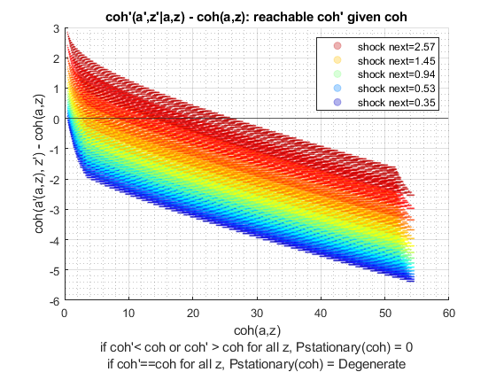 
xxxxxxxxxxxxxxxxxxxxxxxxxxx
xxxxxxxxxxxxxxxxxxxxxxxxxxx
fl_beta = 0.925
fl_crra = 1.5
xxxxxxxxxxxxxxxxxxxxxxxxxxx
xxxxxxxxxxxxxxxxxxxxxxxxxxx
Elapsed time is 1.148400 seconds.
Elapsed time is 0.577485 seconds.
"tb_prob_drv, Percentiles of Y, …" "cl_mt_pol_a"
percentiles cl_mt_pol_aPercentileValues fracOfSumHeldBelowThisPercentile
___________ ___________________________ ________________________________
0.1 0 0
1 0 0
5 0 0
10 0 0
15 0 0
20 0 0
25 0 0
35 0 0
50 0.13351 0.031834
65 0.40053 0.1303
75 0.66756 0.22577
80 0.80107 0.28384
85 1.0681 0.38297
90 1.4686 0.51951
95 2.1362 0.68968
99 3.7383 0.90657
99.9 5.8077 0.98681
"tb_prob_drv, Percentiles of Y, …" "cl_mt_pol_coh"
percentiles cl_mt_pol_cohPercentileValues fracOfSumHeldBelowThisPercentile
___________ _____________________________ ________________________________
0.1 0.44468 0.00062504
1 0.59175 0.0078007
5 0.68262 0.020734
10 0.78744 0.046161
15 0.90837 0.087052
20 0.93387 0.088524
25 1.0479 0.14358
35 1.2088 0.20785
50 1.4584 0.29024
65 1.8049 0.42601
75 2.1667 0.53851
80 2.4164 0.6009
85 2.7451 0.67554
90 3.2219 0.75686
95 4.0034 0.85534
99 5.8926 0.96147
99.9 8.219 0.99493
"tb_prob_drv, Percentiles of Y, …" "cl_mt_pol_c"
percentiles cl_mt_pol_cPercentileValues fracOfSumHeldBelowThisPercentile
___________ ___________________________ ________________________________
0.1 0.44468 0.0008623
1 0.59175 0.010773
5 0.68262 0.028664
10 0.78744 0.063906
15 0.90837 0.12149
20 0.92429 0.12338
25 1.0479 0.20665
35 1.1196 0.24743
50 1.2822 0.39094
65 1.4291 0.54363
75 1.5501 0.65822
80 1.6269 0.72035
85 1.6686 0.78519
90 1.7537 0.84888
95 1.9123 0.91947
99 2.191 0.98207
99.9 2.4809 0.99803
tb_outcomes_meansdperc: mean, sd, percentiles
mean sd coefofvar min max pYis0 pYisMINY pYisMAXY p0_1 p1 p5 p10 p15 p20 p25 p35 p50 p65 p75 p80 p85 p90 p95 p99 p99_9
_______ _______ _________ _______ ______ _______ _________ ________ _______ _______ _______ _______ _______ _______ ______ ______ _______ _______ _______ _______ ______ ______ ______ ______ ______
cl_mt_pol_a 0.49054 0.797 1.6247 0 48.732 0.35655 0.35655 0 0 0 0 0 0 0 0 0 0.13351 0.40053 0.66756 0.80107 1.0681 1.4686 2.1362 3.7383 5.8077
cl_mt_pol_coh 1.7828 1.1058 0.62025 0.44468 54.536 0 0.0025059 0 0.44468 0.59175 0.68262 0.78744 0.90837 0.93387 1.0479 1.2088 1.4584 1.8049 2.1667 2.4164 2.7451 3.2219 4.0034 5.8926 8.219
cl_mt_pol_c 1.2923 0.36846 0.28512 0.44468 5.8042 0 0.0025059 0 0.44468 0.59175 0.68262 0.78744 0.90837 0.92429 1.0479 1.1196 1.2822 1.4291 1.5501 1.6269 1.6686 1.7537 1.9123 2.191 2.4809
tb_outcomes_fracheld: fraction of asset/income/etc held by hh up to this percentile
fracByP0_1 fracByP1 fracByP5 fracByP10 fracByP15 fracByP20 fracByP25 fracByP35 fracByP50 fracByP65 fracByP75 fracByP80 fracByP85 fracByP90 fracByP95 fracByP99 fracByP99_9
__________ _________ ________ _________ _________ _________ _________ _________ _________ _________ _________ _________ _________ _________ _________ _________ ___________
cl_mt_pol_a 0 0 0 0 0 0 0 0 0.031834 0.1303 0.22577 0.28384 0.38297 0.51951 0.68968 0.90657 0.98681
cl_mt_pol_coh 0.00062504 0.0078007 0.020734 0.046161 0.087052 0.088524 0.14358 0.20785 0.29024 0.42601 0.53851 0.6009 0.67554 0.75686 0.85534 0.96147 0.99493
cl_mt_pol_c 0.0008623 0.010773 0.028664 0.063906 0.12149 0.12338 0.20665 0.24743 0.39094 0.54363 0.65822 0.72035 0.78519 0.84888 0.91947 0.98207 0.99803
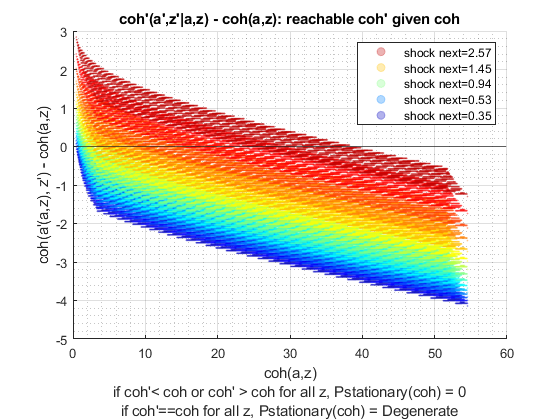 xxxxxxxxxxxxxxxxxxxxxxxxxxx
xxxxxxxxxxxxxxxxxxxxxxxxxxx
fl_beta = 0.925
fl_crra = 2
xxxxxxxxxxxxxxxxxxxxxxxxxxx
xxxxxxxxxxxxxxxxxxxxxxxxxxx
Elapsed time is 1.141469 seconds.
Elapsed time is 0.665103 seconds.
"tb_prob_drv, Percentiles of Y, …" "cl_mt_pol_a"
percentiles cl_mt_pol_aPercentileValues fracOfSumHeldBelowThisPercentile
___________ ___________________________ ________________________________
0.1 0 0
1 0 0
5 0 0
10 0 0
15 0 0
20 0.066756 0.0078103
25 0.066756 0.0078103
35 0.13351 0.01645
50 0.40053 0.06997
65 0.80107 0.17561
75 1.2016 0.29535
80 1.4686 0.37132
85 1.8024 0.45681
90 2.3364 0.58463
95 3.2043 0.73747
99 5.2737 0.92665
99.9 7.8772 0.99004
"tb_prob_drv, Percentiles of Y, …" "cl_mt_pol_coh"
percentiles cl_mt_pol_cohPercentileValues fracOfSumHeldBelowThisPercentile
___________ _____________________________ ________________________________
0.1 0.44468 0.00045585
1 0.59175 0.0054325
5 0.75104 0.015405
10 0.85587 0.033818
15 0.92429 0.054787
20 1.0479 0.086255
25 1.1163 0.10337
35 1.3456 0.16508
50 1.7321 0.26851
65 2.2244 0.40572
75 2.7033 0.51682
80 3.0366 0.5835
85 3.456 0.66011
90 4.0585 0.7453
95 5.0828 0.84996
99 7.3562 0.96028
99.9 10.201 0.99479
"tb_prob_drv, Percentiles of Y, …" "cl_mt_pol_c"
percentiles cl_mt_pol_cPercentileValues fracOfSumHeldBelowThisPercentile
___________ ___________________________ ________________________________
0.1 0.44468 0.00075546
1 0.59175 0.0090328
5 0.75104 0.02605
10 0.85587 0.058533
15 0.90837 0.093848
20 1.0469 0.12935
25 1.0495 0.18332
35 1.142 0.25184
50 1.2906 0.39388
65 1.4178 0.55512
75 1.5268 0.66505
80 1.5953 0.72507
85 1.6636 0.78821
90 1.7537 0.85325
95 1.8689 0.92222
99 2.1305 0.98279
99.9 2.4045 0.99811
tb_outcomes_meansdperc: mean, sd, percentiles
mean sd coefofvar min max pYis0 pYisMINY pYisMAXY p0_1 p1 p5 p10 p15 p20 p25 p35 p50 p65 p75 p80 p85 p90 p95 p99 p99_9
_______ _______ _________ _______ ______ _______ ________ ________ _______ _______ _______ _______ _______ ________ ________ _______ _______ _______ ______ ______ ______ ______ ______ ______ ______
cl_mt_pol_a 0.85542 1.1533 1.3482 0 49.466 0.19843 0.19843 0 0 0 0 0 0 0.066756 0.066756 0.13351 0.40053 0.80107 1.2016 1.4686 1.8024 2.3364 3.2043 5.2737 7.8772
cl_mt_pol_coh 2.1569 1.4456 0.67022 0.44468 54.536 0 0.002211 0 0.44468 0.59175 0.75104 0.85587 0.92429 1.0479 1.1163 1.3456 1.7321 2.2244 2.7033 3.0366 3.456 4.0585 5.0828 7.3562 10.201
cl_mt_pol_c 1.3015 0.34467 0.26483 0.44468 5.0698 0 0.002211 0 0.44468 0.59175 0.75104 0.85587 0.90837 1.0469 1.0495 1.142 1.2906 1.4178 1.5268 1.5953 1.6636 1.7537 1.8689 2.1305 2.4045
tb_outcomes_fracheld: fraction of asset/income/etc held by hh up to this percentile
fracByP0_1 fracByP1 fracByP5 fracByP10 fracByP15 fracByP20 fracByP25 fracByP35 fracByP50 fracByP65 fracByP75 fracByP80 fracByP85 fracByP90 fracByP95 fracByP99 fracByP99_9
__________ _________ ________ _________ _________ _________ _________ _________ _________ _________ _________ _________ _________ _________ _________ _________ ___________
cl_mt_pol_a 0 0 0 0 0 0.0078103 0.0078103 0.01645 0.06997 0.17561 0.29535 0.37132 0.45681 0.58463 0.73747 0.92665 0.99004
cl_mt_pol_coh 0.00045585 0.0054325 0.015405 0.033818 0.054787 0.086255 0.10337 0.16508 0.26851 0.40572 0.51682 0.5835 0.66011 0.7453 0.84996 0.96028 0.99479
cl_mt_pol_c 0.00075546 0.0090328 0.02605 0.058533 0.093848 0.12935 0.18332 0.25184 0.39388 0.55512 0.66505 0.72507 0.78821 0.85325 0.92222 0.98279 0.99811
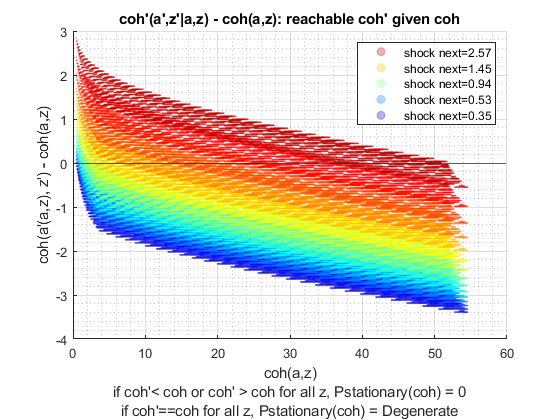 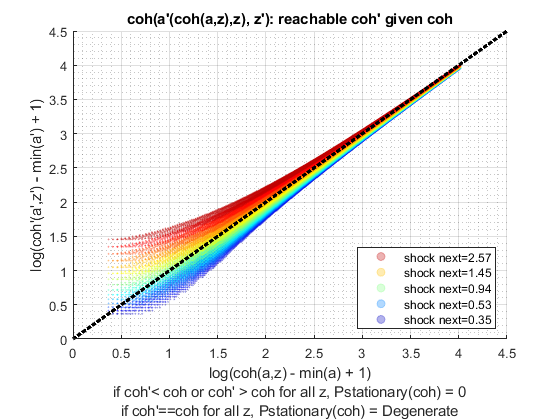 Simulate Model with Discount = 0.99
close all for fl_crra = ar_fl_crra disp('xxxxxxxxxxxxxxxxxxxxxxxxxxx'); disp('xxxxxxxxxxxxxxxxxxxxxxxxxxx'); disp(['fl_beta = ' num2str(ar_fl_beta(3))]); disp(['fl_crra = ' num2str(fl_crra)]); disp('xxxxxxxxxxxxxxxxxxxxxxxxxxx'); disp('xxxxxxxxxxxxxxxxxxxxxxxxxxx'); disp(''); disp(''); disp(''); disp(''); % Call Default Parameters <https://fanwangecon.github.io/CodeDynaAsset/m_az/paramfunc/html/ffs_az_set_default_param.html ffs_az_set_default_param> bl_input_override = true; it_param_set = 9; [param_map, support_map] = ffs_az_set_default_param(it_param_set); % Simulation Accuracy param_map('it_a_n') = it_a_n; param_map('it_z_n') = it_z_n; param_map('fl_beta') = ar_fl_beta(3); param_map('fl_crra') = fl_crra; % Display Parameters support_map('bl_display') = false; support_map('bl_display_final') = false; support_map('bl_time') = true; support_map('bl_profile') = false; % Call Grid Generator <https://fanwangecon.github.io/CodeDynaAsset/m_az/paramfunc/html/ffs_az_get_funcgrid.html ffs_az_get_funcgrid> [armt_map, func_map] = ffs_az_get_funcgrid(param_map, support_map, bl_input_override); % Call Dynamic Programming Problem <https://fanwangecon.github.io/CodeDynaAsset/m_az/solve/html/ff_az_vf_vecsv.html ff_az_vf_vecsv> result_map = ff_az_vf_vecsv(param_map, support_map, armt_map, func_map); % Call Distribution CProgram result_map = ff_az_ds_vec(param_map, support_map, armt_map, func_map, result_map, bl_input_override); % Snap snapnow; end % close all close all; clear all;
xxxxxxxxxxxxxxxxxxxxxxxxxxx
xxxxxxxxxxxxxxxxxxxxxxxxxxx
fl_beta = 0.97
fl_crra = 1
xxxxxxxxxxxxxxxxxxxxxxxxxxx
xxxxxxxxxxxxxxxxxxxxxxxxxxx
Elapsed time is 2.386622 seconds.
Elapsed time is 1.881559 seconds.
"tb_prob_drv, Percentiles of Y, …" "cl_mt_pol_a"
percentiles cl_mt_pol_aPercentileValues fracOfSumHeldBelowThisPercentile
___________ ___________________________ ________________________________
0.1 0 0
1 0 0
5 0 0
10 0.13351 0.00087991
15 0.40053 0.0055622
20 0.6008 0.01157
25 0.86782 0.022217
35 1.5354 0.059667
50 2.6035 0.14208
65 4.0053 0.27666
75 5.2737 0.4073
80 6.0748 0.48358
85 7.1429 0.57377
90 8.478 0.67899
95 10.814 0.81218
99 15.688 0.95006
99.9 21.963 0.99333
"tb_prob_drv, Percentiles of Y, …" "cl_mt_pol_coh"
percentiles cl_mt_pol_cohPercentileValues fracOfSumHeldBelowThisPercentile
___________ _____________________________ ________________________________
0.1 0.51297 0.00030584
1 0.68262 0.002324
5 0.90837 0.0084147
10 1.2088 0.01974
15 1.4717 0.031578
20 1.8005 0.048572
25 2.0983 0.067956
35 2.7825 0.1172
50 3.9901 0.21825
65 5.4955 0.35894
75 6.8088 0.48119
80 7.6716 0.55331
85 8.7777 0.6355
90 10.215 0.72986
95 12.598 0.84277
99 17.662 0.95892
99.9 24.189 0.99465
"tb_prob_drv, Percentiles of Y, …" "cl_mt_pol_c"
percentiles cl_mt_pol_cPercentileValues fracOfSumHeldBelowThisPercentile
___________ ___________________________ ________________________________
0.1 0.51297 0.0011135
1 0.66017 0.0041712
5 0.8979 0.02714
10 1.0448 0.06205
15 1.0912 0.10056
20 1.1437 0.14242
25 1.2097 0.18555
35 1.2809 0.2752
50 1.3811 0.42112
65 1.4829 0.57698
75 1.5509 0.68692
80 1.6043 0.74475
85 1.6536 0.8038
90 1.7128 0.86502
95 1.8201 0.92936
99 2.0153 0.98459
99.9 2.2476 0.9983
tb_outcomes_meansdperc: mean, sd, percentiles
mean sd coefofvar min max pYis0 pYisMINY pYisMAXY p0_1 p1 p5 p10 p15 p20 p25 p35 p50 p65 p75 p80 p85 p90 p95 p99 p99_9
______ _______ _________ _______ ______ ________ __________ __________ _______ _______ _______ _______ _______ ______ _______ ______ ______ ______ ______ ______ ______ ______ ______ ______ ______
cl_mt_pol_a 3.6222 3.5715 0.98602 0 50 0.066513 0.066513 5.6427e-10 0 0 0 0.13351 0.40053 0.6008 0.86782 1.5354 2.6035 4.0053 5.2737 6.0748 7.1429 8.478 10.814 15.688 21.963
cl_mt_pol_coh 4.9938 3.8185 0.76464 0.44468 54.536 0 0.00095399 4.7515e-11 0.51297 0.68262 0.90837 1.2088 1.4717 1.8005 2.0983 2.7825 3.9901 5.4955 6.8088 7.6716 8.7777 10.215 12.598 17.662 24.189
cl_mt_pol_c 1.3716 0.28081 0.20472 0.44468 4.5358 0 0.00095399 4.7515e-11 0.51297 0.66017 0.8979 1.0448 1.0912 1.1437 1.2097 1.2809 1.3811 1.4829 1.5509 1.6043 1.6536 1.7128 1.8201 2.0153 2.2476
tb_outcomes_fracheld: fraction of asset/income/etc held by hh up to this percentile
fracByP0_1 fracByP1 fracByP5 fracByP10 fracByP15 fracByP20 fracByP25 fracByP35 fracByP50 fracByP65 fracByP75 fracByP80 fracByP85 fracByP90 fracByP95 fracByP99 fracByP99_9
__________ _________ _________ __________ _________ _________ _________ _________ _________ _________ _________ _________ _________ _________ _________ _________ ___________
cl_mt_pol_a 0 0 0 0.00087991 0.0055622 0.01157 0.022217 0.059667 0.14208 0.27666 0.4073 0.48358 0.57377 0.67899 0.81218 0.95006 0.99333
cl_mt_pol_coh 0.00030584 0.002324 0.0084147 0.01974 0.031578 0.048572 0.067956 0.1172 0.21825 0.35894 0.48119 0.55331 0.6355 0.72986 0.84277 0.95892 0.99465
cl_mt_pol_c 0.0011135 0.0041712 0.02714 0.06205 0.10056 0.14242 0.18555 0.2752 0.42112 0.57698 0.68692 0.74475 0.8038 0.86502 0.92936 0.98459 0.9983
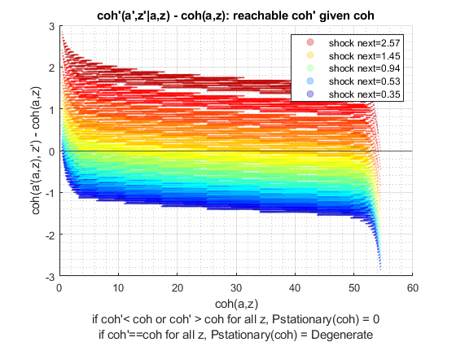 xxxxxxxxxxxxxxxxxxxxxxxxxxx
xxxxxxxxxxxxxxxxxxxxxxxxxxx
fl_beta = 0.97
fl_crra = 1.5
xxxxxxxxxxxxxxxxxxxxxxxxxxx
xxxxxxxxxxxxxxxxxxxxxxxxxxx
Elapsed time is 3.136181 seconds.
Elapsed time is 2.074608 seconds.
"tb_prob_drv, Percentiles of Y, …" "cl_mt_pol_a"
percentiles cl_mt_pol_aPercentileValues fracOfSumHeldBelowThisPercentile
___________ ___________________________ ________________________________
0.1 0 0
1 0 0
5 0.20027 0.000809
10 0.53405 0.0039491
15 0.93458 0.010572
20 1.3351 0.020877
25 1.8024 0.035541
35 2.737 0.078777
50 4.3391 0.17386
65 6.2083 0.31379
75 8.0107 0.44501
80 9.012 0.51777
85 10.347 0.60556
90 12.216 0.70777
95 15.154 0.82844
99 21.495 0.95537
99.9 29.573 0.99413
"tb_prob_drv, Percentiles of Y, …" "cl_mt_pol_coh"
percentiles cl_mt_pol_cohPercentileValues fracOfSumHeldBelowThisPercentile
___________ _____________________________ ________________________________
0.1 0.51297 0.00012592
1 0.71825 0.00090357
5 1.1391 0.0063975
10 1.6193 0.016469
15 2.0983 0.030094
20 2.5665 0.046798
25 3.0562 0.067308
35 4.0559 0.11809
50 5.7248 0.22367
65 7.7513 0.36742
75 9.5458 0.49132
80 10.682 0.56421
85 12.062 0.64558
90 13.967 0.73859
95 17.015 0.84882
99 23.546 0.96092
99.9 31.905 0.99493
"tb_prob_drv, Percentiles of Y, …" "cl_mt_pol_c"
percentiles cl_mt_pol_cPercentileValues fracOfSumHeldBelowThisPercentile
___________ ___________________________ ________________________________
0.1 0.51297 0.00061612
1 0.68262 0.0044656
5 0.97134 0.028718
10 1.0636 0.065159
15 1.147 0.10521
20 1.2108 0.14592
25 1.2448 0.18922
35 1.326 0.2795
50 1.4244 0.42418
65 1.5225 0.57944
75 1.6014 0.68929
80 1.6394 0.74663
85 1.6978 0.80504
90 1.7678 0.86581
95 1.8672 0.92963
99 2.0811 0.98456
99.9 2.3445 0.99828
tb_outcomes_meansdperc: mean, sd, percentiles
mean sd coefofvar min max pYis0 pYisMINY pYisMAXY p0_1 p1 p5 p10 p15 p20 p25 p35 p50 p65 p75 p80 p85 p90 p95 p99 p99_9
______ _______ _________ _______ ______ ________ __________ __________ _______ _______ _______ _______ _______ ______ ______ ______ ______ ______ ______ ______ ______ ______ ______ ______ ______
cl_mt_pol_a 5.5313 4.8747 0.8813 0 50 0.024684 0.024684 2.0152e-07 0 0 0.20027 0.53405 0.93458 1.3351 1.8024 2.737 4.3391 6.2083 8.0107 9.012 10.347 12.216 15.154 21.495 29.573
cl_mt_pol_coh 6.9521 5.1265 0.7374 0.44468 54.536 0 0.00056251 1.1046e-08 0.51297 0.71825 1.1391 1.6193 2.0983 2.5665 3.0562 4.0559 5.7248 7.7513 9.5458 10.682 12.062 13.967 17.015 23.546 31.905
cl_mt_pol_c 1.4208 0.27637 0.19451 0.44468 4.5358 0 0.00056251 1.1046e-08 0.51297 0.68262 0.97134 1.0636 1.147 1.2108 1.2448 1.326 1.4244 1.5225 1.6014 1.6394 1.6978 1.7678 1.8672 2.0811 2.3445
tb_outcomes_fracheld: fraction of asset/income/etc held by hh up to this percentile
fracByP0_1 fracByP1 fracByP5 fracByP10 fracByP15 fracByP20 fracByP25 fracByP35 fracByP50 fracByP65 fracByP75 fracByP80 fracByP85 fracByP90 fracByP95 fracByP99 fracByP99_9
__________ __________ _________ _________ _________ _________ _________ _________ _________ _________ _________ _________ _________ _________ _________ _________ ___________
cl_mt_pol_a 0 0 0.000809 0.0039491 0.010572 0.020877 0.035541 0.078777 0.17386 0.31379 0.44501 0.51777 0.60556 0.70777 0.82844 0.95537 0.99413
cl_mt_pol_coh 0.00012592 0.00090357 0.0063975 0.016469 0.030094 0.046798 0.067308 0.11809 0.22367 0.36742 0.49132 0.56421 0.64558 0.73859 0.84882 0.96092 0.99493
cl_mt_pol_c 0.00061612 0.0044656 0.028718 0.065159 0.10521 0.14592 0.18922 0.2795 0.42418 0.57944 0.68929 0.74663 0.80504 0.86581 0.92963 0.98456 0.99828
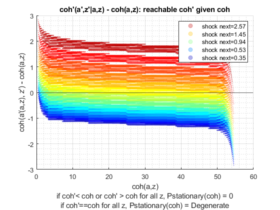 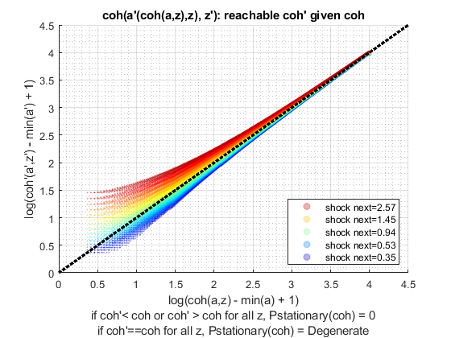 xxxxxxxxxxxxxxxxxxxxxxxxxxx
xxxxxxxxxxxxxxxxxxxxxxxxxxx
fl_beta = 0.97
fl_crra = 2
xxxxxxxxxxxxxxxxxxxxxxxxxxx
xxxxxxxxxxxxxxxxxxxxxxxxxxx
Elapsed time is 3.066893 seconds.
Elapsed time is 2.422027 seconds.
"tb_prob_drv, Percentiles of Y, …" "cl_mt_pol_a"
percentiles cl_mt_pol_aPercentileValues fracOfSumHeldBelowThisPercentile
___________ ___________________________ ________________________________
0.1 0 0
1 0 0
5 0.46729 0.0014596
10 1.0681 0.0064231
15 1.6689 0.015637
20 2.2697 0.028897
25 2.8705 0.045157
35 4.0721 0.091943
50 6.1415 0.1932
65 8.5447 0.33775
75 10.748 0.46641
80 12.083 0.5413
85 13.752 0.62655
90 15.955 0.72299
95 19.626 0.8406
99 27.303 0.95841
99.9 36.983 0.99469
"tb_prob_drv, Percentiles of Y, …" "cl_mt_pol_coh"
percentiles cl_mt_pol_cohPercentileValues fracOfSumHeldBelowThisPercentile
___________ _____________________________ ________________________________
0.1 0.51297 5.6536e-05
1 0.78744 0.00078904
5 1.4717 0.0059645
10 2.2084 0.016112
15 2.851 0.030133
20 3.5156 0.047988
25 4.1927 0.069208
35 5.4511 0.12302
50 7.6145 0.23052
65 10.148 0.3774
75 12.393 0.50117
80 13.775 0.57342
85 15.49 0.65439
90 17.812 0.74628
95 21.531 0.85396
99 29.499 0.9626
99.9 39.434 0.99524
"tb_prob_drv, Percentiles of Y, …" "cl_mt_pol_c"
percentiles cl_mt_pol_cPercentileValues fracOfSumHeldBelowThisPercentile
___________ ___________________________ ________________________________
0.1 0.51297 0.00034664
1 0.78744 0.0055812
5 1.0161 0.030214
10 1.143 0.066686
15 1.1896 0.10601
20 1.2522 0.14821
25 1.2855 0.19113
35 1.3673 0.2812
50 1.4695 0.42507
65 1.5685 0.57975
75 1.6503 0.68921
80 1.7016 0.74582
85 1.7553 0.80442
90 1.8296 0.86507
95 1.9485 0.92913
99 2.1727 0.98436
99.9 2.4659 0.99825
tb_outcomes_meansdperc: mean, sd, percentiles
mean sd coefofvar min max pYis0 pYisMINY pYisMAXY p0_1 p1 p5 p10 p15 p20 p25 p35 p50 p65 p75 p80 p85 p90 p95 p99 p99_9
______ _______ _________ _______ ______ ________ __________ __________ _______ _______ _______ ______ ______ ______ ______ ______ ______ ______ ______ ______ ______ ______ ______ ______ ______
cl_mt_pol_a 7.5585 6.1569 0.81457 0 50 0.014133 0.014133 4.1408e-06 0 0 0.46729 1.0681 1.6689 2.2697 2.8705 4.0721 6.1415 8.5447 10.748 12.083 13.752 15.955 19.626 27.303 36.983
cl_mt_pol_coh 9.0315 6.4216 0.71102 0.44468 54.536 0 0.00033267 1.8929e-07 0.51297 0.78744 1.4717 2.2084 2.851 3.5156 4.1927 5.4511 7.6145 10.148 12.393 13.775 15.49 17.812 21.531 29.499 39.434
cl_mt_pol_c 1.473 0.28291 0.19206 0.44468 4.5358 0 0.00033267 1.8929e-07 0.51297 0.78744 1.0161 1.143 1.1896 1.2522 1.2855 1.3673 1.4695 1.5685 1.6503 1.7016 1.7553 1.8296 1.9485 2.1727 2.4659
tb_outcomes_fracheld: fraction of asset/income/etc held by hh up to this percentile
fracByP0_1 fracByP1 fracByP5 fracByP10 fracByP15 fracByP20 fracByP25 fracByP35 fracByP50 fracByP65 fracByP75 fracByP80 fracByP85 fracByP90 fracByP95 fracByP99 fracByP99_9
__________ __________ _________ _________ _________ _________ _________ _________ _________ _________ _________ _________ _________ _________ _________ _________ ___________
cl_mt_pol_a 0 0 0.0014596 0.0064231 0.015637 0.028897 0.045157 0.091943 0.1932 0.33775 0.46641 0.5413 0.62655 0.72299 0.8406 0.95841 0.99469
cl_mt_pol_coh 5.6536e-05 0.00078904 0.0059645 0.016112 0.030133 0.047988 0.069208 0.12302 0.23052 0.3774 0.50117 0.57342 0.65439 0.74628 0.85396 0.9626 0.99524
cl_mt_pol_c 0.00034664 0.0055812 0.030214 0.066686 0.10601 0.14821 0.19113 0.2812 0.42507 0.57975 0.68921 0.74582 0.80442 0.86507 0.92913 0.98436 0.99825
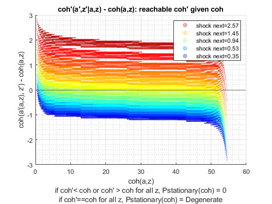 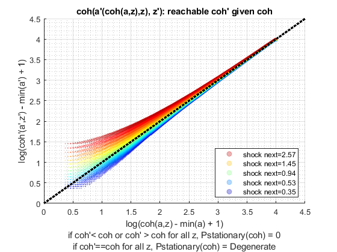